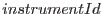
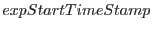
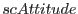
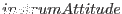

interface getCalInfo
subroutine getCalInfoName(setName, instrumentId, expStartTimeStamp&
, scAttitude, instrumAttitude)
character(*), intent(in) :: setName
integer(int32), intent(out) :: instrumentId
real(double), intent(out) :: expStartTimeStamp
type(SpacecraftAttitudeType), intent(out) :: scAttitude, instrumAttitude
end subroutine getCalInfoName
subroutine getCalInfoSet(set, instrumentId, expStartTimeStamp, scAttitude&
, instrumAttitude)
type(DataSetT), intent(in) :: set
integer(int32), intent(out) :: instrumentId
real(double), intent(out) :: expStartTimeStamp
type(SpacecraftAttitudeType), intent(out) :: scAttitude, instrumAttitude
end subroutine getCalInfoSet
end interface
NOTE that this call also sets the state of the cal to the returned instrument.
The  and  are obtained from respectively from the INSTRUME and DATE-OBS keywords of the dataset header. The  is read from the RA_PNT, DEC_PNT and PA_PNT keywords (this is actually wrong, since the instrument attitude is what should be stored in these, not the spacecraft attitude). The boresight is then obtained for the exposure start time, and  calculated by applying the boresight rotation to .